Examples#
Runnable demonstrations of the central results in each
physicskit.statphys chapter: lattice phase transitions, molecular
dynamics, random walks, and self-organized criticality.
See also the narrative tutorial:
Each script in this gallery is self-contained and can be run directly with
python examples/statphys/<section>/<script>.py. Every script also carries
an RST module docstring as its title/description and uses # %% markers to
split narrative text from code, which is exactly what Sphinx-Gallery renders
into the pages below – the script is the source of truth for what you see,
not a copy of it.
Sections#
ising – the 2D Ising model: Onsager’s exact phase transition, finite-size scaling to extract critical exponents, and critical slowing down (Metropolis versus the Wolff cluster algorithm).
xy_model – the Kosterlitz-Thouless transition via vortex-antivortex unbinding.
potts_model – first- versus second-order transitions in the q-state Potts model.
spin_glass – frustration and the Edwards-Anderson order parameter.
percolation – percolation as a purely geometric phase transition.
renormalization – Kadanoff block-spin renormalization group flow.
quantum_statistics – Bose-Einstein and Fermi-Dirac distributions and Bose-Einstein condensation.
molecular_dynamics – Boltzmann’s H-theorem: relaxation to the Maxwell-Boltzmann distribution.
random_walk – diffusion, the Einstein relation, and the central limit theorem.
ehrenfest_urn – the Ehrenfest urn: reversibility, recurrence, and the arrow of time.
sandpile – self-organized criticality in the Bak-Tang-Wiesenfeld sandpile.
interactive – interactive Plotly dashboards.
Ehrenfest urn#
Reversible microscopic dynamics and the emergence of an arrow of time.
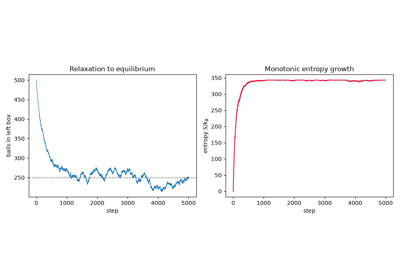
The Ehrenfest urn: reversibility, recurrence, and the arrow of time
Interactive Plotly visualizations#
Pan/zoom/hover-enabled counterparts of the static Matplotlib plots.

Ising model#
The 2D ferromagnetic Ising model: Gibbs’s canonical ensemble summed exactly, the Metropolis algorithm, Onsager’s exactly solved second-order phase transition, and Wolff’s cluster algorithm.
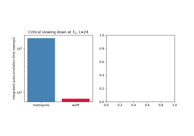
The Wolff cluster algorithm: beating critical slowing down
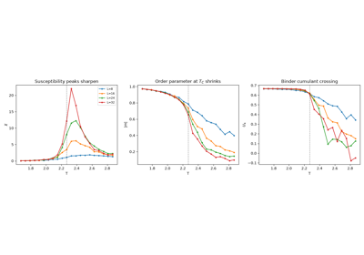
Finite-size scaling: extracting critical exponents
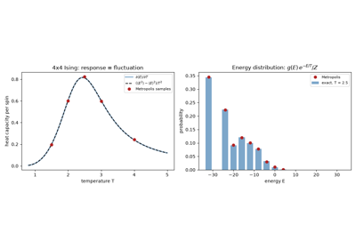
Gibbs’s canonical ensemble: response from fluctuations
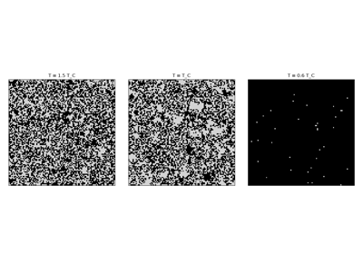
Watching criticality: the Ising lattice at T_C
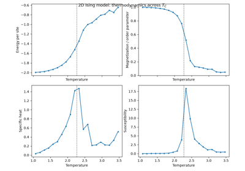
Onsager’s exact solution: the 2D Ising phase transition
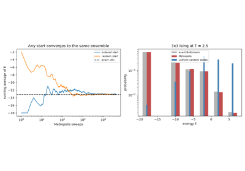
The Metropolis algorithm: sampling Boltzmann without the partition function
Interface growth#
The Kardar-Parisi-Zhang universality class via Restricted Solid-On-Solid growth.
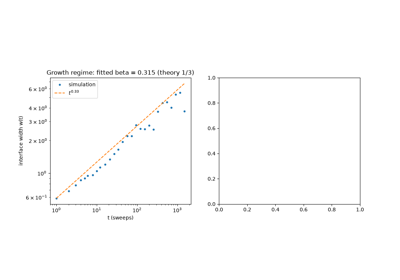
Universal interface roughening: the Kardar-Parisi-Zhang universality class
Landau mean-field theory#
Order parameters, broken symmetry, and critical exponents from a free-energy expansion alone.
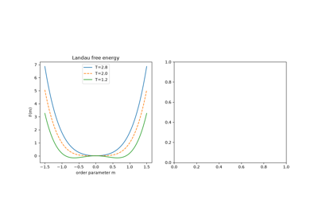
Landau mean-field theory: order parameters from symmetry alone
Molecular dynamics#
Maxwell’s velocity distribution, Alder and Wainwright’s molecular dynamics with the Lennard-Jones gas and Velocity Verlet integration, and Boltzmann’s H-theorem.
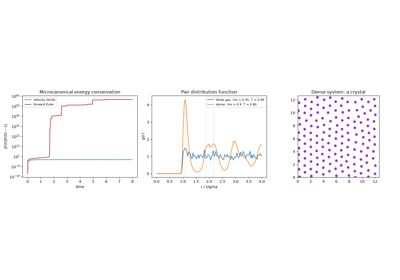
Alder and Wainwright: molecular dynamics simulation
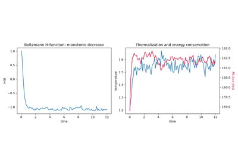
Boltzmann’s H-theorem: relaxation to the Maxwell-Boltzmann distribution
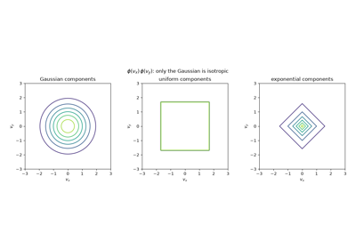
Maxwell’s distribution of molecular velocities
Nonequilibrium work relations#
Jarzynski’s equality: exact equilibrium free energies from irreversible work measurements.
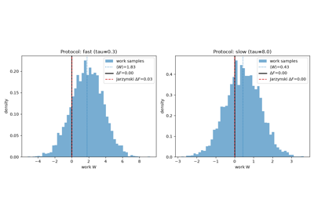
Jarzynski’s equality: exact free energies from irreversible work
Percolation#
Site and bond percolation: a purely geometric critical phenomenon.
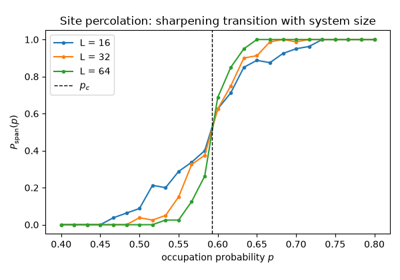
Percolation: a purely geometric phase transition
Potts model#
The q-state generalization of the Ising model, contrasting continuous and discontinuous transitions.
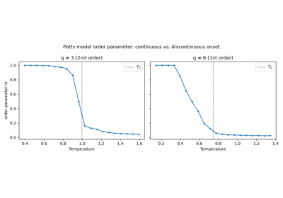
First- versus second-order transitions in the q-state Potts model
Quantum statistics#
Bose-Einstein and Fermi-Dirac occupation, and Bose-Einstein condensation.
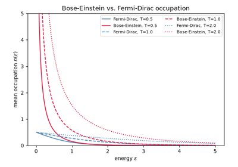
Quantum statistics: Bose-Einstein, Fermi-Dirac, and condensation
Random walks#
Diffusion, the Einstein relation, the central limit theorem, and the Langevin equation.
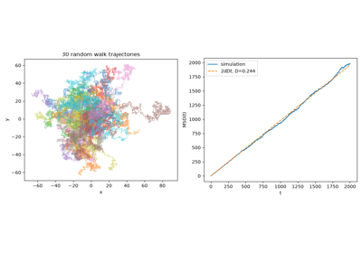
Diffusion, the Einstein relation, and the central limit theorem
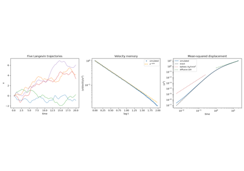
The Langevin equation: Brownian motion one trajectory at a time
Renormalization group#
Kadanoff block-spin coarse-graining and RG fixed points.
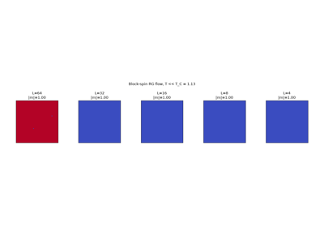
Kadanoff block-spin renormalization group flow
Self-organized criticality#
The Bak-Tang-Wiesenfeld sandpile: power laws without fine-tuning.
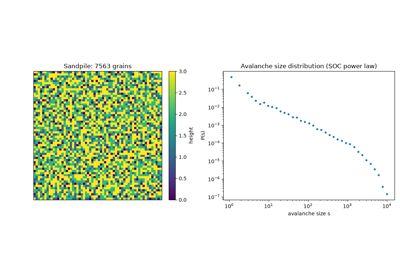
Self-organized criticality: the Bak-Tang-Wiesenfeld sandpile
Spin glasses#
The Edwards-Anderson Ising spin glass: quenched disorder and frustration.
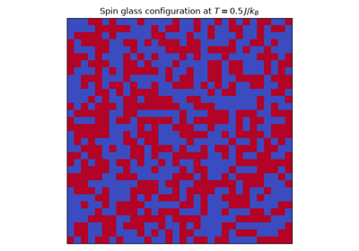
Spin glasses: frustration and the Edwards-Anderson order parameter
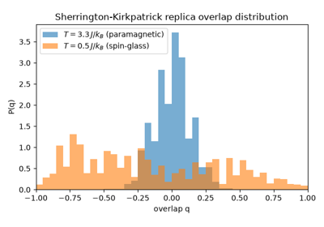
The Sherrington-Kirkpatrick model and Parisi’s replica overlap
XY model#
The 2D classical XY model and the topological Kosterlitz-Thouless transition: the vortex energy-entropy argument and vortex unbinding.
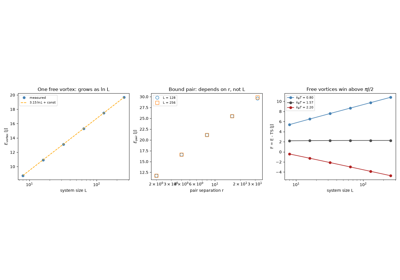
Kosterlitz and Thouless: the vortex energy-entropy argument
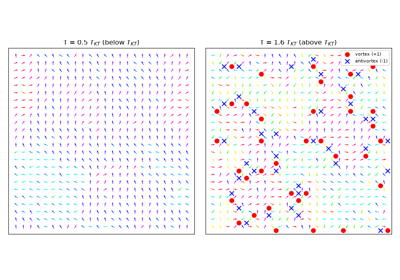
The Kosterlitz-Thouless transition: vortex-antivortex unbinding
Partition function zeros#
The Lee-Yang circle theorem: phase transitions from the complex-fugacity structure of Z.
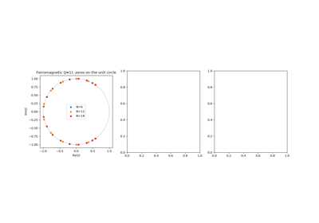
The Lee-Yang circle theorem: partition function zeros in the complex plane